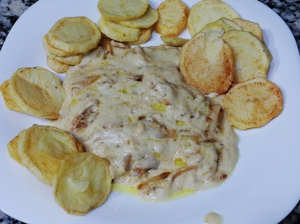

Lomo al Yogur

Ingredientes para dos personas
- 4 o 6 Filetes de lomo
- 1 cebolla
- 1 pastilla de caldo de pollo
- 1 yogur natural (o un brick de nata líquida)
- Aceite de oliva y pimienta negra molida
Preparación
Cortamos la cebolla en juliana y la sofreímos hasta que esté bien dorada.
Añadimos el lomo junto con la pimienta y lo marcamos[cite: 29].
Añadimos la pastilla de caldo diluida en un poco de agua caliente y el yogur.
Dejamos que haga "chup-chup" un rato y listo. Podemos acompañar con patatas fritas.
⬅ Volver al inicio